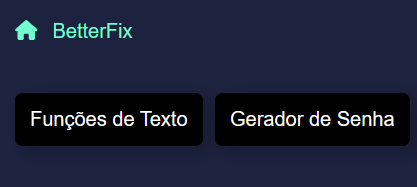
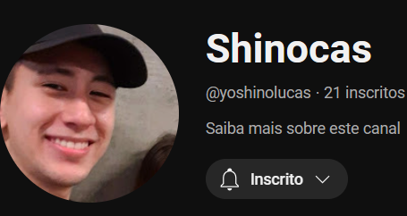
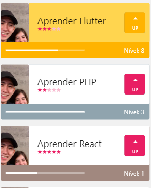
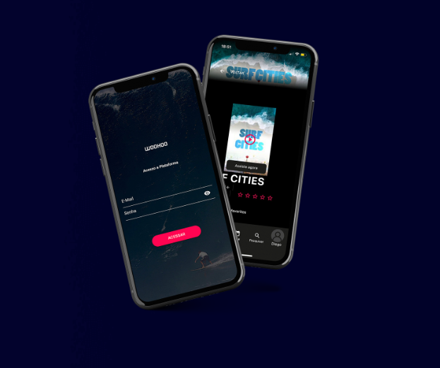

Oi eu sou o
Lucas,
Desenvolvedor de SoftwareAqui eu apresento alguns dos meus projetos que fiz.
Feito por um apaixonado por tecnologia.
Principais Trabalhos & Projetos
Moopo
Moopo - Aplicativo de Avisos em Filmes
Aplicativo que traz um catálogo de avisos sobre gatilhos psicológicos e conteúdos sensíveis em Filmes, Séries e Animes.BetterFix

Portal com Ferramentas de Utilidades para o Trabalho
O site faz com que o trabalho cotidiano e repetitivo seja facilitado com as diversas ferramentas disponíveis como Geradores de Senhas, Funções de Textos, etc.Shinocas | YouTube

Canal de Tutoriais
Gravo vídeos para ajudar outras pessoas a desenvolverem seus próprios projetos de tecnologia.Sistema CRM + ERP
Compact Business - Sistema de gestão
Conta com funcionalidades cruciais para empresas, como financeiros a gerenciamento de estoques, com direito a customização por ramo, como seção de mesas e pedidos para restaurantesTo-do List App

Gerenciamento de atividades
O aplicativo permite administrar atividades cotidianas, com customizações como níveis e dificuldadesWooHoo Action
